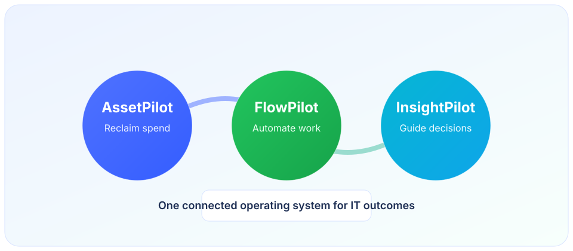

Product Suite
InsightPilot completes the Joyful Innovation suite with AssetPilot and FlowPilot.

Executive ready reporting without the reporting grind.
InsightPilot completes the Joyful Innovation suite with AssetPilot and FlowPilot.

InsightPilot turns operational metrics into decision ready narratives: what changed, why it matters, what risk is emerging, and what to do next. Designed for leaders who need clarity, not charts.
KPI summaries, anomaly explanation, trend analysis, and recommended actions for leadership.
Faster decisions, earlier risk visibility, and stronger alignment across operations, finance, and procurement.
Start with a guided first run and see exactly what you can reclaim before your next renewal.
Sign Up for a Walkthrough